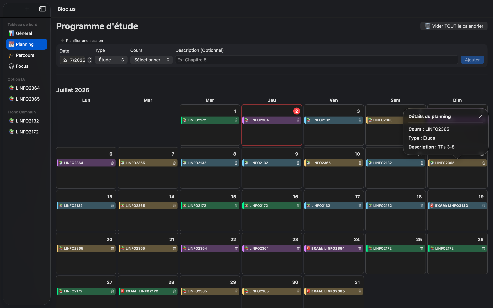

Application native macOS automatisant la valorisation d'actions via des modèles DCF. L'outil intègre des APIs en temps réel (Finnhub, ExchangeRate) avec du multithreading pour générer des analyses de scénarios boursiers et des visualisations de données interactives.



Outil de productivité natif macOS spécialement conçu pour les étudiants. L'application permet de structurer efficacement les périodes de "blocus", d'intégrer des timers de concentration et de suivre sa progression académique sur l'année.


Une interface web pensée pour le suivi de portefeuilles boursiers (évolution du projet StocksPickeur). Alliant mon intérêt pour la finance et le développement web, l'outil permet d'analyser et de tracker les performances de ses investissements.


Outil web performant axé sur la Data Visualisation. Il permet de générer des graphiques interactifs modernes, personnalisables et exportables en haute définition. Concentré sur la fonctionnalité pure, sans surcharges stylistiques.


Engagement associatif et gestion de projets dans le cadre du scoutisme. Organisation complète de grands rassemblements thématiques pour les jeunes (ex: conception scénaristique d'un camp médiéval "Rêver des neuf royaumes"), prouvant des capacités de leadership, de logistique et de créativité.
Échange Erasmus+
Padoue, Italie | Septembre 2026 - Février 2027
Master [120] en Sciences Informatiques | Intelligence Artificielle
Septembre 2024 - Présent
Bachelier en Sciences Informatiques
Septembre 2021 - Juin 2024
Bruxelles | Mars 2027 - Juin 2027
Recherche et développement autour de l'amélioration des réponses des modèles d'IA par l'implémentation de méthodes de calibration pour la classification supervisée.
Louvain-La-Neuve | Juillet 2026 - Août 2026
Louvain-La-Neuve | Janvier 2026 - Juin 2026
Louvain-La-Neuve | Septembre 2025 - Mars 2026
Gestion active d'un portefeuille d'actions valorisé à plus de 25 000 € et création de contenu visuel pour les réseaux du club.